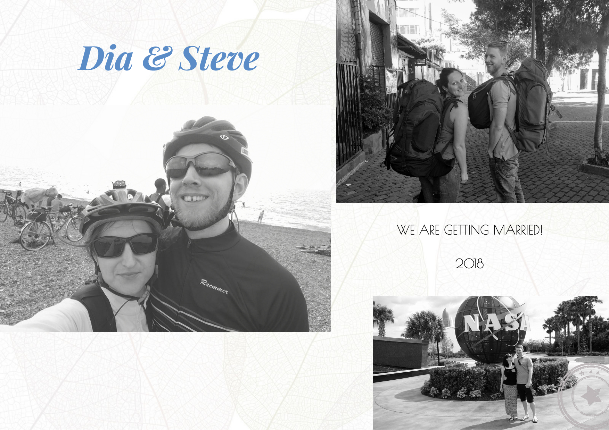

A mi történetünk
A történetünk 2014-ben kezdődik egy házibuliban. Miután közös barátunk bemutatott egymásnak,
nagyon kedveltük egymást, de egyikünk sem akart abban az időben kapcsolatban lenni. Elkezdtük beszélgetni
és minden, amire aznap éjjelről emlékezünk, az az, hogy hazamegyünk azzal a tudattal, hogy találkoztunk valaki különlegessel.
Néhány nappal később Steve megkérte Diát, hogy menjen el vele vacsorázni. Dia aggódott,hogy kellemetlen lesz,
ha Steve-vel kell töltenie néhány órát
ha a dolgok nem mennek túl jól, így Dia egy alternatív lehetőséget javasolt: egy rövid biciklizést. A
a tervezett órás bringázás egy teljes napra változott. Ez is az egyik oka annak, hogyan fedeztük fel a
közös szenvedélyt a kerékpározás iránt. Több ezer kilométer és sok fájdalmas hátsó után úgy döntöttünk, hogy
együtt kerekezünk tovább az élet rögös útjain.
Rád is vonatkozik a meghívás!
Megtisztelő, hogy Téged is a vendégeink között tudhatunk.
Az alábbi linkre kattintva kérünk jelezd részvételi szándékodat.
Kérlek ne felejtsd el feltüntetni allergiád vagy egyéb bármi javaslatot, kívánságot, pl. gyerekülés, zenei
kérések, stb.
Kérlek jelezz vissza, hogy tudjunk tovább szervezni.
Szeretettel: Dia és Steve
Részvétel visszajelzés